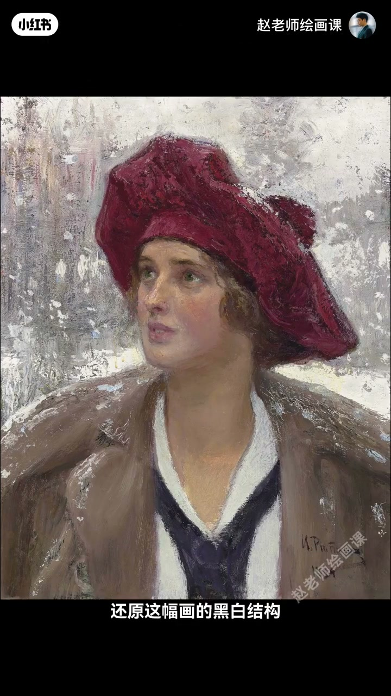
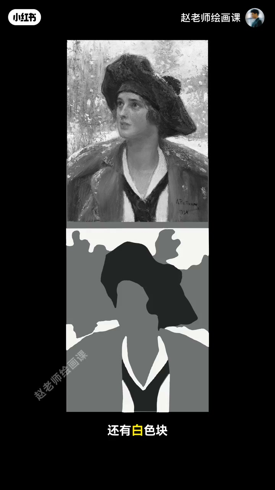
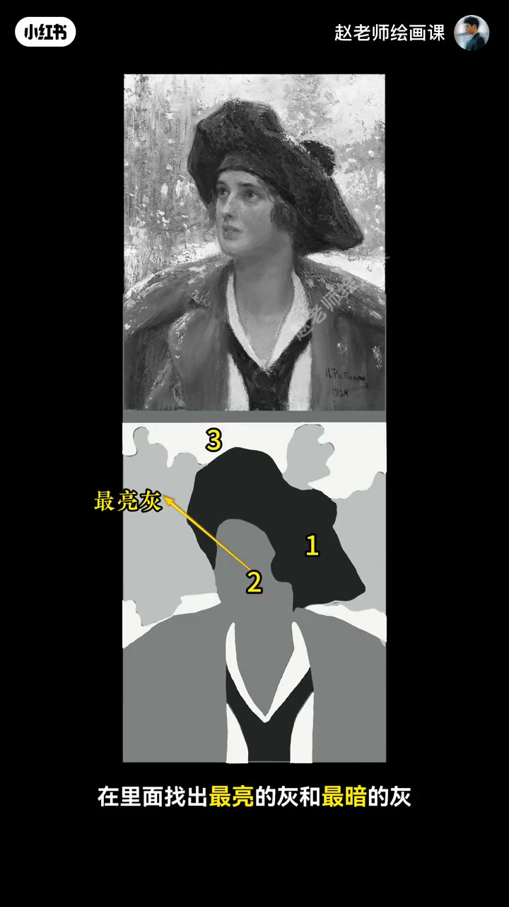
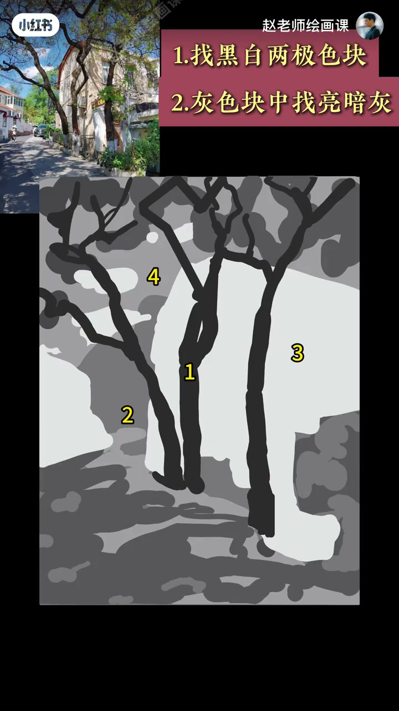

内容要点
好听的曲子其实只用五个音阶——音乐可以五音成曲；绘画也可用五个色块搞定黑白关系：五调归纳法。以列宾肖像验证：第一步眯眼找最黑与最白，其余先并成一个大灰块，画面瞬间成清晰三色阶，整体但不太具体。第二步在大灰里找出最亮灰与最暗灰——像施了魔法，更丰富明确又好看。到这儿优秀黑白结构训练已完成，再细化甚至加彩都会简单。再挑战超复杂画面同样成立。五调归纳法就是画面不脏不乱、立体扎实的万能地基。
知识结构
五音类比；眯眼黑白＋大灰＝三色阶。
大灰分亮灰暗灰；结构完成可细化加彩。
复杂画面仍可用；作业出明确黑白稿。
黑白先五调：黑、白、亮灰、暗灰、中间灰——结构清楚了，细化和上色才不脏不乱。
00:00-01:07找最黑最白：先变成三色阶
音乐五音成曲；绘画用五调归纳法搞定黑白。列宾肖像示范：眯起眼睛离远看，轻松找出最大黑块与白色块，剩下先统一算作一个大灰块——画面瞬间被归纳为清晰的三个色阶，很整体，但还不具体。
00:40 肖像／00:55 三色阶是证据。


01:07-01:45灰阶再切开：五调完成
回到大灰块，找出最亮的灰和最暗的灰。效果像施了魔法：更丰富明确又好看。到这儿，一张优秀的黑白结构训练就已经完成；剩下尽可安心细化，甚至加入色彩都会非常简单。
01:15 五调结果可指认。

01:45-02:32复杂画面与万能地基
上点强度挑战超级复杂的画面——依然成立，这就是科学思路加有效方法的魅力。作业：找一张喜欢的图，用五调归纳法快速构建好看又明确的黑白稿。
五调归纳法就是你画面不脏不乱、立体扎实的万能地基。01:50 复杂挑战结果。

完整转录（18段）
以下文本由 Whisper medium 模型自动转录，可能存在少量识别误差，已尽可能修正。
听出来了吗?这些好听的曲子其实只用了五个音阶,所以音乐可以五音成曲。
那绘画呢?今天,赵老师就来教大家只用五个色块搞定画面黑白关系的方法——五调归纳法。
这是列宾的《纳塔利亚马克西莫瓦》肖像。我们试着用五调法还原这幅画的黑白结构。
第一步,找最黑和最白。请大家跟我一起,眯起你的卡兹兰大眼睛离远看。
我们可以轻松找出画面最大的黑块,还有白色块。剩下的呢,先统一算作一个大的灰块。
看,画面瞬间被归纳为清晰的三个色结。很整体,但不太具体,对吧?别着急,魔法现在才开始。
第二步,区分灰色结。我们回到这个大灰块,在里面找出最亮的灰和最暗的灰。
效果怎么样?是不是像施了魔法一样,更丰富明确又好看?
其实到这儿,一张优秀的黑白结构训练就已经完成了。
剩下的,你尽可以在这里面继续安心的细化,甚至加入色彩都会非常简单。
好了,刚刚我们用大师作品验证了五调归纳法。现在我们上点强度,挑战一张超级复杂的画面。
震撼吧?这就是科学思路加有效方法的魅力所在。
今天的作业来了,找一张你喜欢的图片,用五调归纳法快速构建出一个好看又明确的黑白稿。
我在评论区等着大家的美作。
其实,五调归纳法就是你画面,不脏不乱,立体扎实的万能地基。
如果你想系统掌握这套构建好看画面的底层心法,千万别错过我10月20号开班的构成系统课。
下期想听我讲哪个原理呢?评论区告诉我。
拜拜。